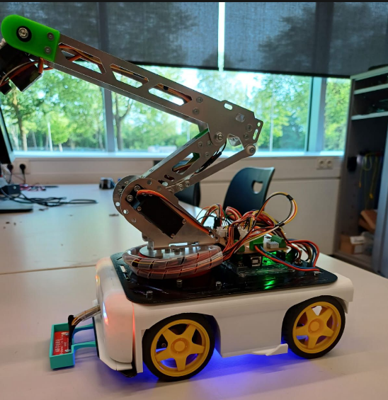
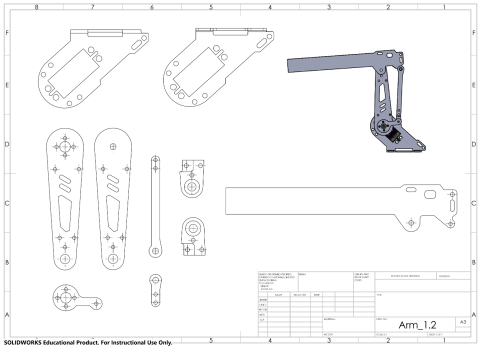
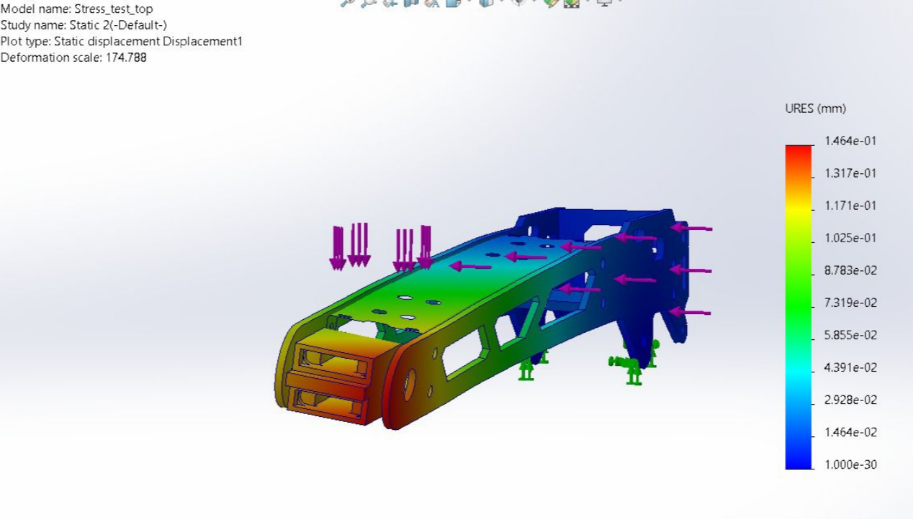

SIM3 Project · Robotics

A prototype robotic arm and gripper developed for the SIM3 project, designed to handle and manipulate objects autonomously. The arm was conceived as the first iteration of a 6 degrees-of-freedom system, integrating stepper motors, 3-bearing support, and custom aluminium components.
Initial arm design, motor integration, wiring, aluminium fabrication, and full system assembly. I was responsible for the first prototype — taking it from concept through CAD, into physical fabrication and assembly.


Built deep practical experience in electromechanical integration, low-friction mechanism design, and prototype assembly — bridging the gap between digital CAD models and physical hardware.